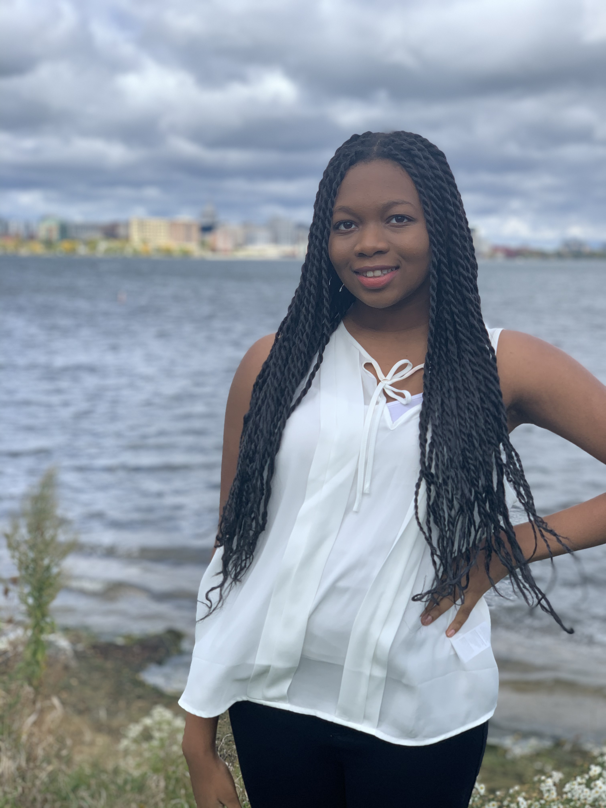
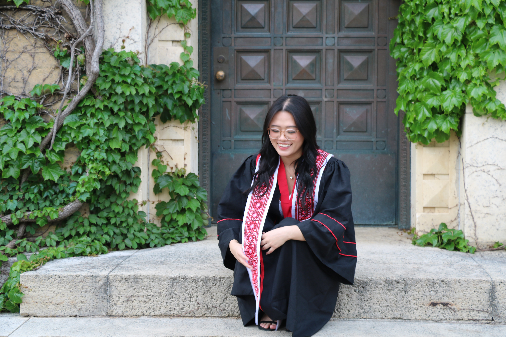

Hi, my name is Tou Xiong Lor, and I’m a senior at UW-Madison, majoring
in Information Science with a Computer Science certificate. I'm
originally from Milwaukee, Wisconsin, and passionate about creative
activities like drawing and painting. I also love staying active by
playing sports such as soccer, football, and volleyball. In addition,
dancing and spending quality time with my friends and family are some
of my favorite pastimes.

My name is Lewa and I’m a senior studying Information Science with a
certificate in Computer Science. I grew up here in Madison, but
decided to spend my first two years of college in Minnesota before
transferring to UW-Madison. In my free time, I like cooking, going for
walks, and crocheting. I’m really interested in technology and how
people interact with it and how it shapes the world, which is why I’m
interested in going into UX research or design after graduation.

My name is Aaliyah Xiong, and I am a senior at UW-Madison, graduating
this fall with a major in Information Science and certificates in
Digital Studies and Asian American Studies. I’ve always had a keen
interest in design, and only more recently, through my coursework,
I’ve begun exploring the different ways design interacts with
technology and user experience. In my free time, I enjoy walking,
spending time with loved ones, bed rotting, and lately, I’ve gotten
into playing pickleball!